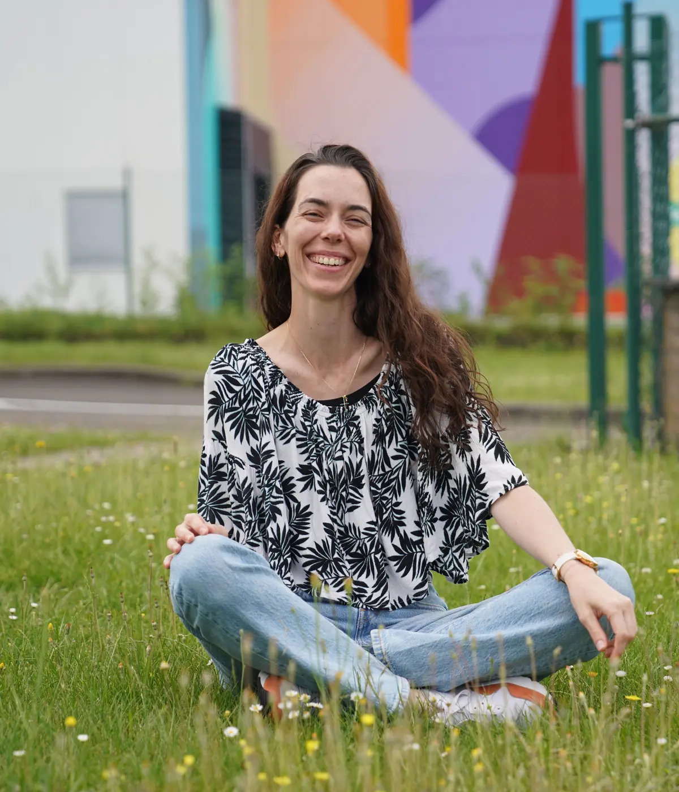
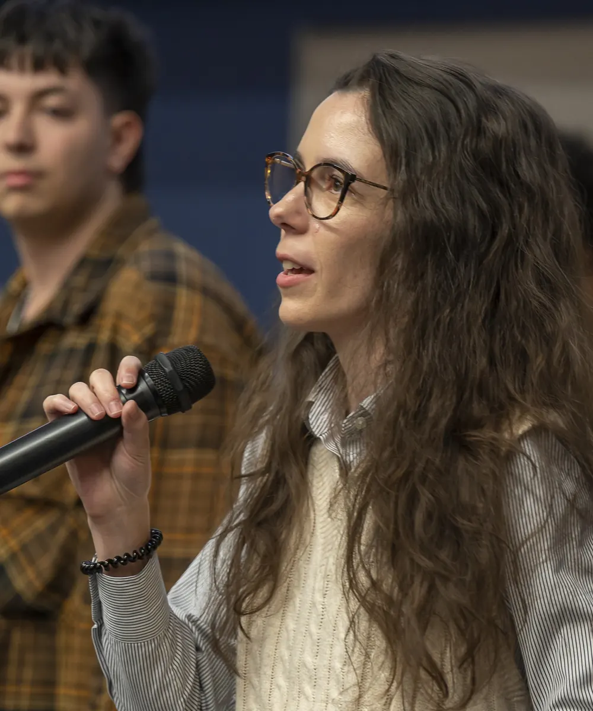

Shift Happens
Sortir du flou pour enfin vivre de l'activité qui te ressemble VRAIMENT
La rigueur de la science et la bienveillance du coaching : je transforme ce que tu m'apportes en plan clair et concret pour vivre de ton activité de coach.
Ingénieure et chercheuse universitaire de formation, j'analyse, je structure et je te renvoie ce que tu m'apportes de façon claire et digeste, en respectant tes valeurs et ton rythme. Le but : développer l'activité de coach qui te ressemble, aligné à tes talents et tes valeurs.
Réserve ton appel découverte
Ça te parle ?
Tu es au bon endroit si :
- Tu doutes de ta légitimité, même quand les résultats sont là
- Tu ne sais pas trop par où commencer, ou par où continuer
- L'idée de « vendre » ton accompagnement te met mal à l'aise
- Tu donnes beaucoup, parfois trop, et tu as du mal à te faire payer à ta juste valeur
- Tu as l'impression d'être bloqué·e, sans vraiment savoir pourquoi
Bonne nouvelle : rien de tout ça n'est gravé dans le marbre. Être bloqué·e ne veut pas dire que tu n'es pas prêt·e ou capable, il te manque juste le bon déclic. Ce déclic, c'est avant tout une question de clarté, et ça se résout bien plus facilement que tu l'imagines peut-être.
Rejoins l'accompagnement Reframe
Le déclic, c'est maintenant.L'offre phare
L'accompagnement Reframe
Un cadre sur mesure pour développer un projet unique qui ne ressemble qu'à toi
Concrètement, ça marche comment ?
Tu m'amènes ton projet, qui tu es, ce que tu veux faire. C'est fouillis ? C'est brouillon ? C'est flou ? Aucun problème. Plus c'est brut, plus c'est authentique, plus le résultat te ressemblera.
Ensemble, on va questionner, clarifier et analyser ce que tu apportes.
Ensuite, on structure tout ça et on établit un plan d'action personnalisé, basé sur tes ressources, tes valeurs et tes objectifs.
C'est ça, le cadre. Le recadrage vient ensuite, presque naturellement : une fois ta situation vraiment claire, les croyances qui te bloquaient perdent leur emprise.
Pas de format copié-collé figé, pas de nombre de séances imposé : je m'adapte à ton rythme et à tes ambitions.
Mon parcours (le vrai, sans filtre)
Avant d'aider des coachs à structurer leur activité, j'ai passé plusieurs années à structurer... des molécules. Ingénieure agronome de formation, j'ai enchaîné un master en sciences des aliments au Canada, puis un doctorat en sciences agronomiques au Japon.
Ce que la recherche scientifique apprend, en vrai, ce n'est pas la théorie. C'est à regarder un même sujet sous plusieurs angles jusqu'à ce qu'il devienne clair. Un peu comme recadrer une photo : le sujet ne change pas, mais soudain, on voit enfin ce qui compte.
En parallèle, le développement personnel me travaillait depuis plus de dix ans, presque comme une deuxième thèse, informelle celle-là. Aujourd'hui, coach professionnelle formée selon les standards de l'ICF, je fais converger les deux : un regard scientifique, structuré, sans concession sur la clarté, et une approche profondément humaine, sans jugement, avec (beaucoup) de bonne humeur.
Reframe, c'est cette conviction-là appliquée à ton activité : le sujet ne change pas forcément, mais la façon dont tu le regardes, si. Une fois qu'on voit clair, le reste suit.
Découvre l'accompagnement Reframe
Deux autres façons d'avancer
Tu cherches un accompagnement plus classique, sans le volet « structurer ton activité » ? Je propose aussi du coaching individuel selon la méthodologie ICF, pour explorer une question précise ou avancer sur un objectif ciblé.
Tu préfères creuser seul·e avant de passer à l'action ? Des ebooks thématiques sont en préparation. Pour l'instant réservés aux personnes que j'accompagne, ils seront disponibles publiquement d'ici la fin de l'année.
Une question sur l'un ou l'autre ? Écris-moi.Questions fréquentes
Combien de temps dure un accompagnement ?
Il n'y a pas de durée imposée. Certaines personnes ont besoin d'un simple ajustement en 1 à 3 séances. D'autres préfèrent un accompagnement plus soutenu (1 à 2 séances par semaine, sur moins d'un mois) ou plus étalé (1 à 2 séances par mois, sur 6 à 9 mois), pour avoir le temps de tester et ajuster entre les séances.
Le rythme dépend de ton point de départ et de ton objectif. C'est toi qui choisis la fréquence et la durée, selon tes besoins.
Présentiel ou en ligne ?
Les séances se font en ligne. Un accompagnement en présentiel est possible à ton domicile si tu habites dans le Hainaut.
Comment se déroule la prise de contact ?
Tu peux me contacter par email (hello@alexiareframe.com), par téléphone ou SMS au +32 (0)498 67 88 19, ou par WhatsApp au +33 (0)6 10 27 45 77. Le premier échange, de 30 minutes, est gratuit et sans engagement. Je réponds sous 24h.
Je n'ai pas encore de client, je suis concerné·e ?
Oui. L'accompagnement peut justement porter sur cette étape : définir ton offre de service, fixer tes prix, identifier ta clientèle cible et apprendre à vendre tes services.
Je repars avec quoi concrètement ?
Le contenu s'adapte à ton objectif, il n'y a pas de livrable imposé. Selon tes besoins, tu peux repartir avec :
- Un positionnement de marque écrit
- Un plan d'action sur 6 mois
- Un business plan et plan financier sur 3 ans
- Une offre de service complète
- Une méthode de planification et d'ajustement de ton activité (design thinking)
- Des outils de gestion de projet
- Un travail sur tes croyances limitantes, avec des exercices de recadrage
On papote ?
Une question, une envie d'échanger ? Écris-moi, appelle-moi, ou passe par WhatsApp. Le premier échange (30 minutes) est gratuit et sans engagement. Je réponds sous 24h.